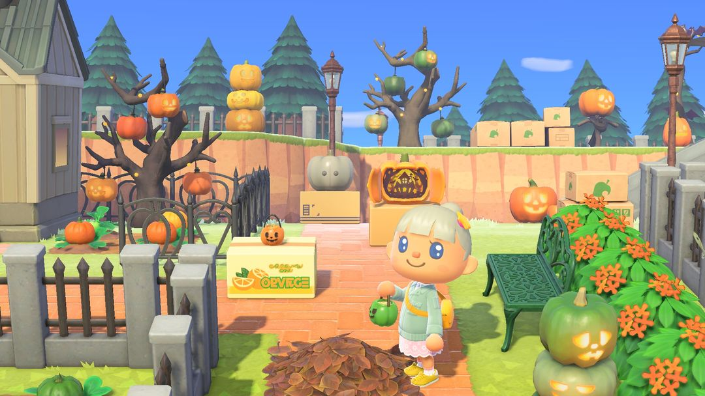
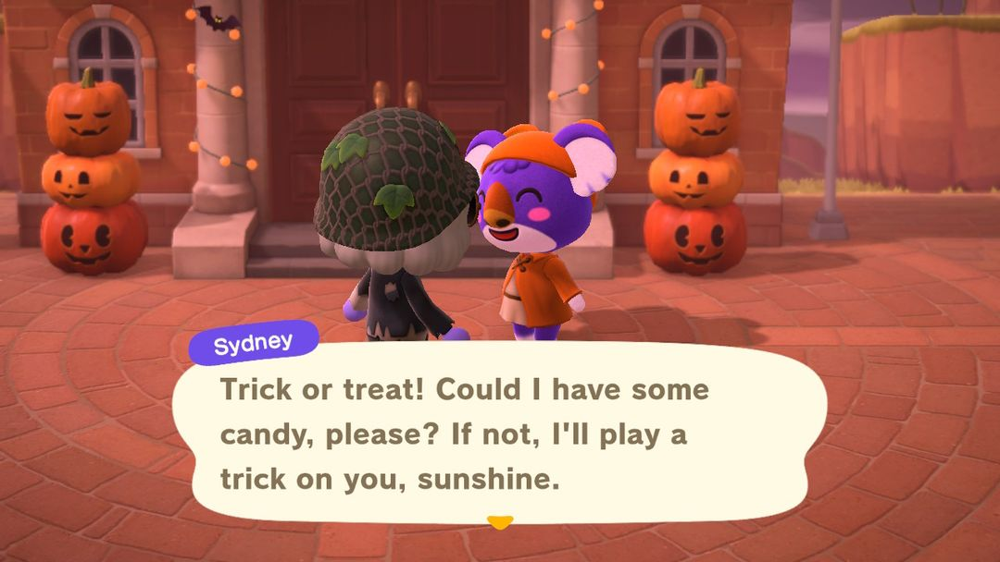
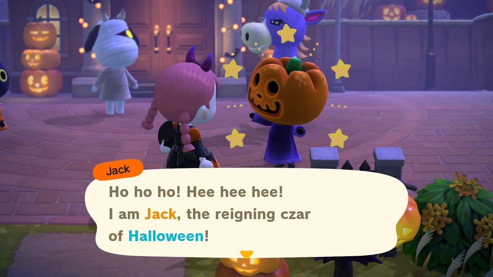

萬聖節：10 月 31 日晚上 5 點開始，糖果要提前存
南瓜王、糖果、棒棒糖，還有萬聖節家具的 DIY 方程式
萬聖節一年只有一晚：10 月 31 日傍晚 5 點到半夜 12 點，南北半球是同一天。這一晚島民們換上變裝在島上四處閒晃，見人就討糖；南瓜王也會在服務處一帶徘徊。萬聖節馬車、南瓜王面孔和長袍，都得趕在這一晚拿到手。
真正要提前準備的只有糖果。Nook商店的糖果每人每天只能買 1 顆，拖到 31 號當天才想起來，臨時也只買得到一顆。所以下面先說 10 月裡能做哪些準備，再說當晚糖果怎麼用。

萬聖節家具擺在戶外（圖：任天堂宣傳圖，經 Nookipedia）
0110 月裡能先做的事
10 月 1 日，南瓜王會寄來一封信，裡面夾著一幅「南瓜王肖像畫」，算是提前來打聲招呼。
每天買一顆糖
也是從 10 月起，Nook商店的貨架上擺出了糖果，120 鈴錢一顆。價錢不貴，麻煩的是每人每天只能買 1 顆，最好每天上線先去店裡帶一顆，從月初開始存，到月底能存下三十來顆。
島上有第二個角色的話，讓那個角色也天天跑一趟；去朋友島上串門子時，順路在那邊的 Nook商店再帶一顆。這樣一天能多存一兩顆。
種南瓜
萬聖節家具幾乎都離不開南瓜，用量最大的是橘色南瓜，光一輛萬聖節馬車就要 30 個（材料表在第 4 節）。10 月 Nook商店會進南瓜苗，280 鈴錢一個；然然那裡一年四季都有貨。打算做全套的話，南瓜苗趁早種下去。
學萬聖節的 DIY 方程式
10 月裡射下來的氣球，有可能掉出萬聖節的 DIY 方程式。去島民家串門子時撞見他們正埋頭做 DIY，也有機會學到萬聖節的。要是那張你已經學過，島民就不教了，轉手塞給你別的：七成是 5 個橘色南瓜，三成是 1 顆糖果。
衣服和裝扮
ABLE SISTERS 這個月會掛出萬聖節服裝，例如破舊服。當晚穿著萬聖節服裝去島民家能討到糖（第 3 節細說），所以至少準備一件。想把臉也畫上，可以拿 Nook哩數兌換萬聖節的臉部彩繪和彩色隱形眼鏡，各 2,400 哩數。
到了 10 月 28 日，服務處門口會豎起兩座萬聖節塔，狸克、西施惠他們也戴上了小惡魔角、魔法師條紋帽。看到這些，萬聖節就只剩幾天了。
0231 日晚上
5 點一過，在外面閒逛的島民就都換上了變裝。湊過去搭話，他們會伸手跟你討糖，這時候有三種回應方式。
給糖果，島民會回贈一件萬聖節家具。頭幾次回贈的東西有固定順序：先是萬聖節掛旗或萬聖節桌上布置，然後是萬聖節地毯，再是萬聖節地板或萬聖節牆，接著是掛旗和桌上布置的 DIY 方程式，最後是其他還沒學到的萬聖節 DIY 方程式。這幾樣都到手以後，再給糖就隨機抽家具、DIY 方程式或南瓜。
給棒棒糖，島民一定會回贈萬聖節甜點盤。不過棒棒糖得來不易，一般先留著給南瓜王，原因在下面。
不給，島民就要搗蛋，往你臉上抹一臉彩繪。

島民討糖：不給就搗蛋（英文版畫面）（圖：Nookipedia）
棒棒糖從哪來
棒棒糖商店不賣，只能拿糖果從島民手裡換：島民收下糖果，除了回贈家具，還有一定機率順手塞你一根棒棒糖。機率隨你已經送出的糖果數往上漲，給到第 4 顆時一定會出；出過一次，計數就歸零重來。
| 已經給過的糖果 | 這次出棒棒糖的機率 |
| 0 顆 | 0% |
| 1 顆 | 25% |
| 2 顆 | 40% |
| 3 顆 | 60% |
| 4 顆以上 | 100% |
這個計數是每個島民各算一份，還是全島一起算，查到的資料說法不太一致，這裡沒辦法給出確定的答案。
南瓜王
南瓜王當晚守在服務處附近。他也會找你討糖，不過塞給他糖果還是棒棒糖，回禮差得挺多。
給他棒棒糖，前三根依序換來萬聖節馬車、馬車的 DIY 方程式、萬聖節棒的 DIY 方程式，從第四根起改送南瓜王面孔或南瓜王長袍。
給他糖果，有三成機會換來面孔或長袍，其餘時候他只給你一把南瓜。
馬車和這兩張 DIY 方程式都得從南瓜王手裡拿，所以存到的前三根棒棒糖最好先交給他。多出來的再去換面孔、長袍，或是送給島民換甜點盤。

南瓜王（英文版畫面）（圖：任天堂宣傳圖，經 Nookipedia）
03當晚糖果不夠怎麼辦
糖果沒存夠的話，當晚還有兩個辦法補救。
一是穿著萬聖節服裝去島民家裡坐坐。在家的島民每隔 5 分鐘會塞給你一顆糖，在屋裡多待一會兒就能多存幾顆。
二是把南瓜王面孔和長袍一起穿上。島民會把你誤認成南瓜王，反過來往你手裡塞糖，不過每個島民只會上當一次。穿著這一身在外面晃，島民也不會追著你討糖。
04萬聖節家具要多少南瓜
常見幾樣萬聖節家具的主要材料列在下面。最耗材料的是馬車，除了 30 個橘色南瓜，還要三種木材各 20 個、鐵礦石 10 個。
| DIY 方程式 | 主要材料 |
| 萬聖節燈籠 | 橘色南瓜 4 |
| 萬聖節塔 | 橘色南瓜 7 |
| 萬聖節桌 | 橘色南瓜 14、軟木材 10 |
| 萬聖節甜點盤 | 橘色南瓜 1、糖果 3 |
| 萬聖節餅乾 | 麵粉 1、四色南瓜各 1 |
| 萬聖節馬車 | 橘色南瓜 30、三種木材各 20、鐵礦石 10 |
| 萬聖節棒 | 萬聖節燈籠 1、星星碎片 3 |
萬聖節系列家具做好以後還能改造，拿不同顏色的南瓜當材料，就能改成橘、黃、綠、單色四種配色。想要橘色以外的配色，別的顏色的南瓜也得留幾個。
小提示甜點盤做一個要 3 顆糖果。31 日當晚糖果先優先拿去換棒棒糖，甜點盤等活動結束了再做。
05版本變化
萬聖節是 1.5.0 秋季更新加進來的。2.0 以後節日每年會自動到來，不用再等更新。3.0 的更新說明裡沒提到萬聖節，玩法照舊。
動森圈圈 · iOS App 和微信小程式都搜「動森圈圈」